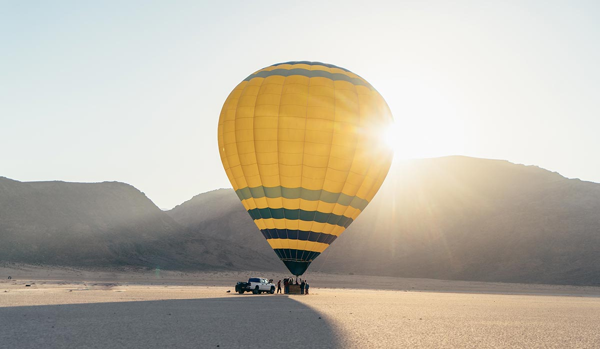
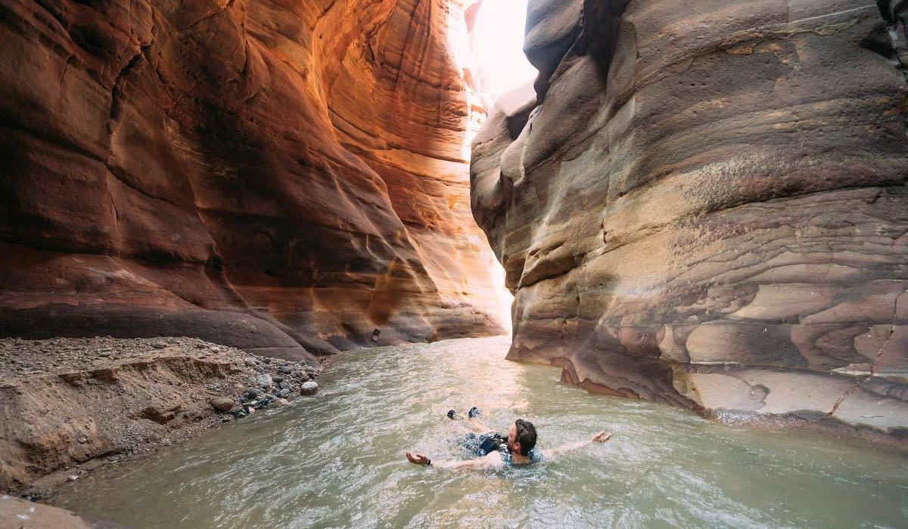
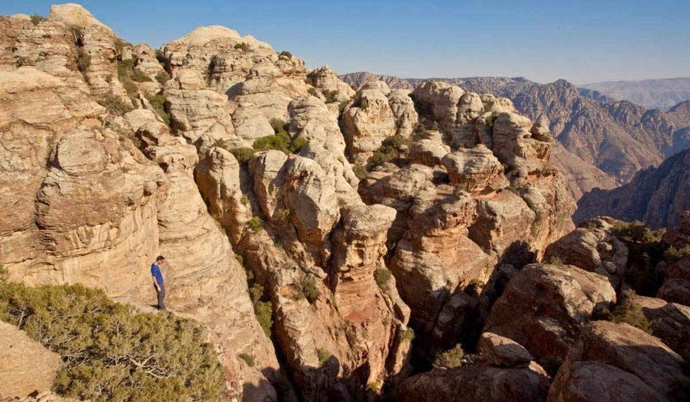
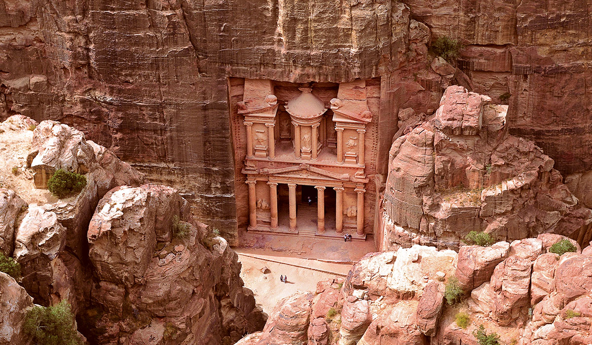

Wadi Rum
Wadi Rum Ein Labyrinth aus monolithischen Felsformationen erhebt sich bis zu 1.750 Meter aus dem Wüstenboden und stellt auch für erfahrene Bergsteiger eine große Herausforderung dar. Wer lieber wandert, kann die Stille der unendlichen Weite erleben, Schluchten und Wasserlöcher erkunden. Desweiteren können Sie hier Ballonfahrt oder Kamelausritte unternehmen und Flugsportfans können die Landschaft mit einem Microleichtflieger entdecken.

Wadi Mujib
Das Wadi Mujib, aufgrund seiner Beschaffenheit auch 'Grand Canyon Jordaniens' genannt, ist der am tiefsten gelegenen Nationalpark der Welt. Die Felsschlucht mündet auf einer Höhe von 410 Metern unter dem Meeresspiegel ins Tote Meer. Da sich die Schlucht aber bis hinauf auf 900 Meter zieht, umfasst der Nationalpark ein Gefälle von 1.300 Metern. Insgesamt speist sich der Fluss aus sieben Zuflüssen und ist besonders für Freunde des Canyoning eine empfehlenswerte Adresse. Außerdem ist das Tal für seine heißen Quellen berühmt, denen eine heilende Wirkung innewohnt. Wagen Sie sich in Begleitung eines Führers in die nassen Felsenschluchten, genießen Sie die Landschaft und entdecken Sie bedrohte Arten, die in diesem unwegsamen Gelände geschützt sind.

Dana Biosphären Reservat
Das Dana Biosphären Reservat erstreckt sich über 308 Quadratkilometer und umfasst eine Kette von Tälern und Bergen, die vom Jordangraben bis hinab ins Flachland von Wadi Araba reichen. Der Berg Rummana, die uralten Ruinen von Feynan, das Dorf Dana, in dem die Zeit stehen geblieben zu sein scheint, und die beeindruckenden Sandsteinfelsen von Wadi Dana vermögen Besucher immer wieder zu beeindrucken. Zudem wird in Dana die vielfältige Tier- und Pflanzenwelt geschützt: 600 verschiedene Pflanzenarten, 37 Säugetierarten und 190 Vogelarten inkl. zahlreicher seltenen Arten sind zu entdecken. Einheimische Beduinen-Guides stehen für längere Ausflüge zur Verfügung (Wandern, Canyon-Exkursionen und Mountainbiken), kürzere Touren können auch auf eigene Faust unternommen werden.

Die rosarote Stadt Petra
Die rosarote Stadt Petra Gewaltige roten Felsen und enorme Mausoleen: Die oft als achtes Weltwunder bezeichnete verlassene Felsenstadt aus der Antike ist der bedeutenste Schatz Jordaniens. Reiten Sie auf Kamelen in die beeindruckenden Schluchten – und erwandern Sie Teile dieses überwältigenden Tals.